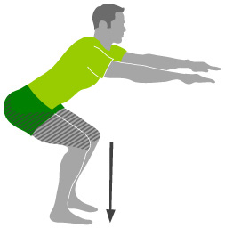

A squat is a strength exercise in which the trainee lowers their hips from a standing position and then stands back up. During the descent of a squat, the hip and knee joints flex while the ankle joint dorsiflexes; conversely the hip and knee joints extend and the ankle joint plantarflexes when standing up.
